ogueMiddleChild

ogueMiddleChild
The included video and audio examples span some of my performances over the last 18 years
Scherzo for Sax Quartet
Warren Barker
Performed in 2003 by the EKU Saxophone Quartet.
Soprano/Russ Kahmann, Alto/Randi McQueary
Tenor/Kevin Osborne, Bari/Blake (??Sorry??)
Burger Joint
Foster Kids of Funk
Performed in 2003 at M.F. Hooligans in Richmond, KY.
Written by Chasen Little, Sam Kruer, and Nathan Gray.
Horn arrangement by Russ Kahmann and James Koehler.
?Jazz Ballad?
Please Remind Me Who Wrote It
Performed in 2003 by Saxophobia.
Alto 1/Russ Kahmann, Alto 2/Katie Poplin
Tenor 1/Kevin Osborne, Tenor 2/Pam Meadors, Bari/Randi McQueary
Also, sorry for the awful scoops. It's shameful. Jazz fail.
Whiskey in the Jar
trad. Irish
arr. Metallica
Performed by Wonderlust in 1999.
Russ Kahmann/Lead Guitar, Brad Wethington/Rhythm Guitar
Matt Harden/Bass, Marc Denton/Drums.
Aneurysm
Nirvana
Performed by Wonderlust in 1999.
Marc Denton/Lead Guitar, Brad Wethington/Rhythm Guitar
Matt Harden/Bass, Russ Kahmann/Drums.
Lifted
Andy K. Milner
Album: I am the One
Andy asked me to record some saxophone tracks for this video.
It was the first time I ever recorded with an independent artist
and was recorded in a dorm room on the EKU campus in Dupree Hall.
My goal was to work into the sound of the already-recorded violin.
Only two takes were recorded, and they were a blast!!